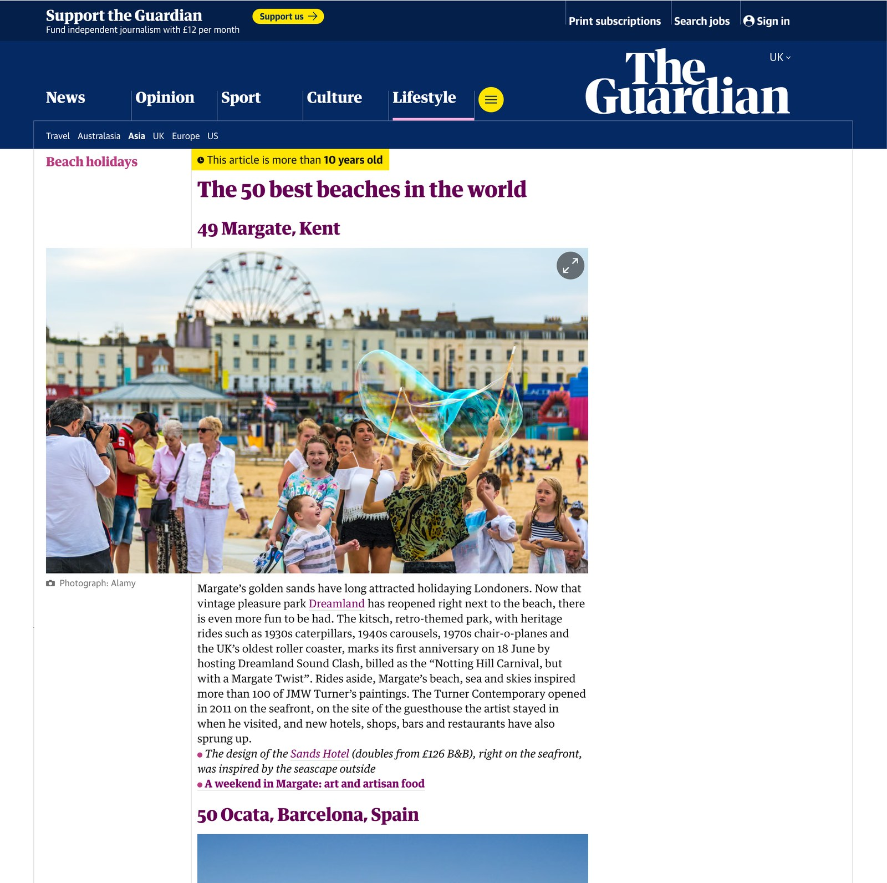
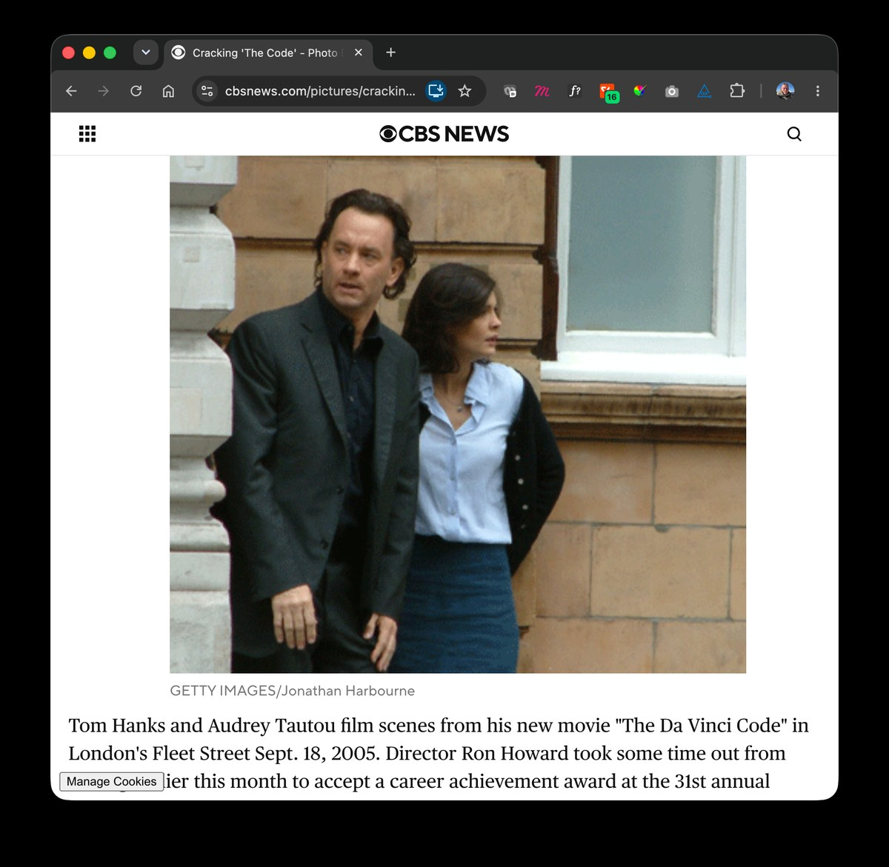

Photography
Documentary & landscape
Events, communities and places. Published in the national and international press, and licensed through Alamy, Adobe Stock and Getty Images.
Published work


Stock photography
Photography
Events, communities and places. Published in the national and international press, and licensed through Alamy, Adobe Stock and Getty Images.
Published work


Stock photography